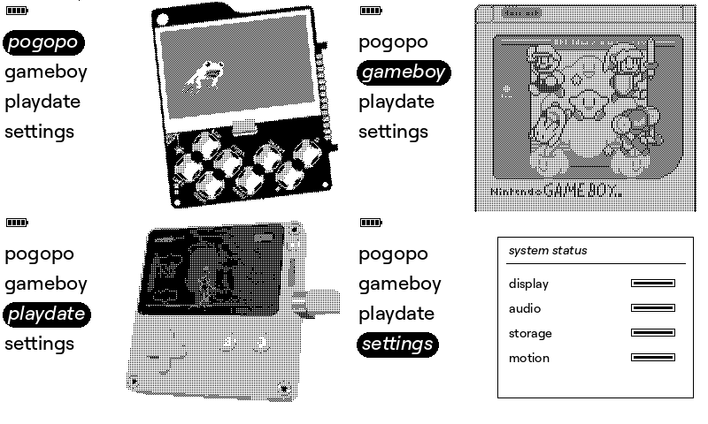
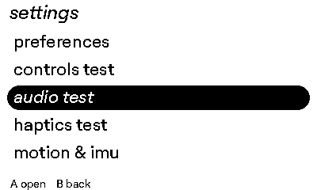
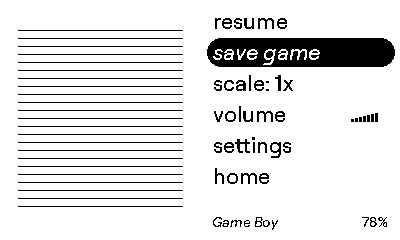
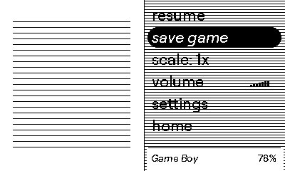

Project
Gallery
Current 1-bit UI captures from the firmware project, plus clearly marked slots for the hardware photography still needed for this portfolio.
Console and hardware
Console photo
TODO: front and three-quarter views
TODO: front and three-quarter views
Custom PCB
TODO: top and bottom photographs
TODO: top and bottom photographs
Hardware close-up
TODO: display, controls, and expansion area
TODO: display, controls, and expansion area
Enclosure
TODO: assembly and internal stack-up
TODO: assembly and internal stack-up
Launcher and UI




Animation demo
Video demo
TODO: add a hosted device walkthrough
TODO: add a hosted device walkthrough
Games
The launcher capture includes the current Game Boy browser/runtime entry. Dedicated gameplay photographs and direct LCD video have not been added to the repository assets yet.
TODO: add on-device Game Boy footage and native Pogopo app/game captures with the game names and measured runtime configuration.